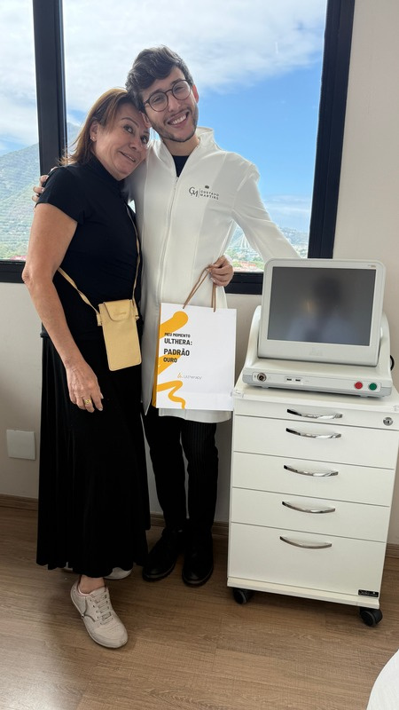
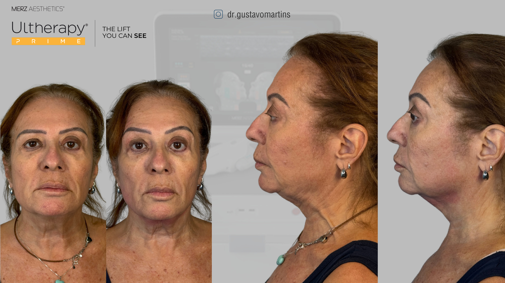
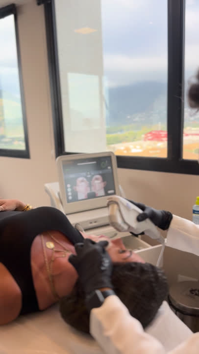
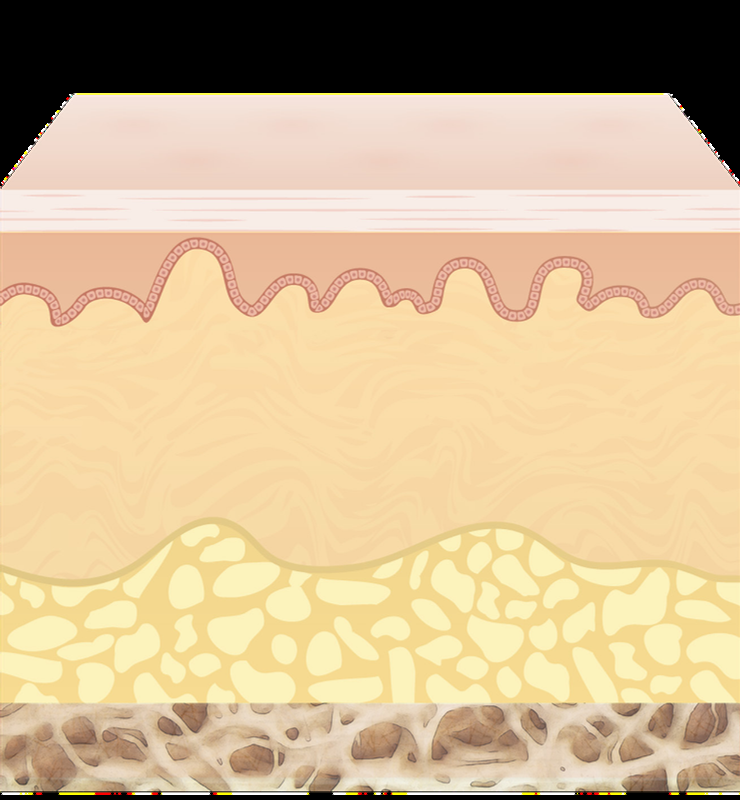
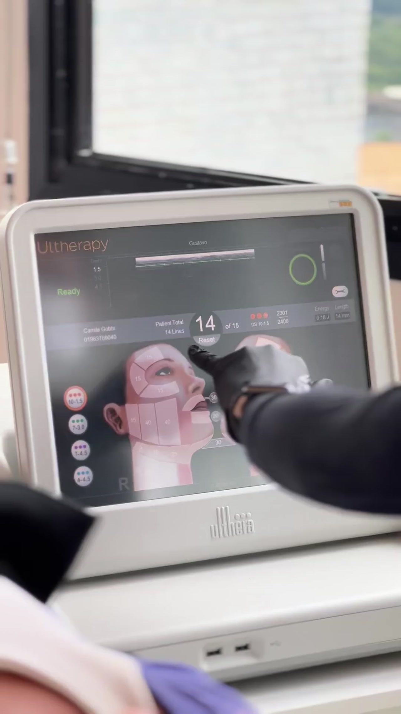
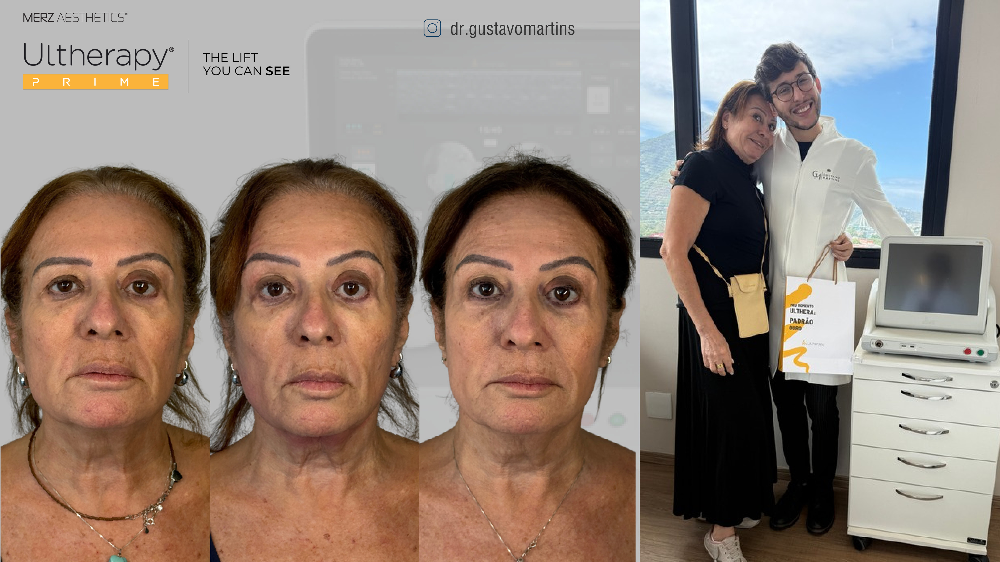
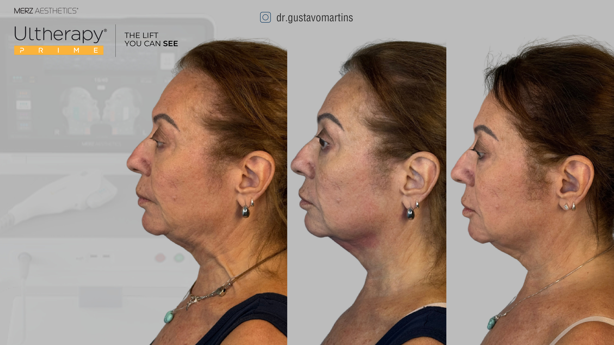

O lifting
que você
consegue ver.
Ultherapy®, o único ultrassom microfocado com visualização em tempo real aprovado pela FDA para lifting não cirúrgico.

A mesma paciente, antes e depois

Paciente real tratada com Ultherapy® pelo Dr. Gustavo Martins. Da esquerda para a direita: antes (frente) · depois (frente) · antes (perfil) · depois (perfil). Resultados individuais podem variar. © Merz Aesthetics / @dr.gustavomartins
O único ultrassom com imagem em tempo real
O Ultherapy combina ultrassom microfocado com visualização em tempo real para entregar energia nas camadas profundas da pele, exatamente onde o tratamento será mais eficaz, sem tocar a superfície.
Único aprovado pela FDA para lifting de sobrancelhas, submento, pescoço e melhora de rugas do colo. Mais de 100 publicações científicas. Mais de 3 milhões de tratamentos realizados.

Tratamento sendo realizado na Clínica Dr. Gustavo Martins, Rio de Janeiro.
Números que falam por si
[1] Estudo Northwestern University 2006 a 2007. [2] Kenkel JM, UT Southwestern. [3] Sasaki G et al, ASDS 2018.

Representação das três profundidades de tratamento do Ultherapy. © Merz Aesthetics
Três profundidades. Um resultado.
O processo regenerativo
SEE. PLAN. TREAT.
Antes de qualquer disparo de energia, o Ultherapy gera uma imagem em tempo real da sua anatomia. O Dr. Gustavo vê exatamente a espessura de cada camada e planeja onde tratar, como um mapa personalizado do seu rosto.

Interface do Ultherapy com mapeamento facial personalizado em tempo real.
Entrega com segurança e personalização
Cada paciente tem uma anatomia diferente. O Ultherapy adapta o tratamento para cada rosto.


Pacientes reais tratados pelo Dr. Gustavo Martins · @dr.gustavomartins · Resultados individuais podem variar.

Dr. Gustavo Martins
Cirurgião-dentista, biomédico e mestre em Harmonização Orofacial. O Ultherapy chegou à minha clínica porque acredito que lifting não cirúrgico precisa ser feito com tecnologia que realmente funciona, e com visualização para garantir que está sendo feito certo.
Perguntas sobre o Ultherapy
Pronto para ver seu lifting?
O Ultherapy está disponível na Clínica Dr. Gustavo Martins no Rio de Janeiro. Agende sua avaliação e descubra se é o procedimento certo para você.
Agendar avaliação pelo WhatsAppPacientes reais Ultherapy®. Os resultados individuais podem variar. © Merz Aesthetics / @dr.gustavomartins, imagens autorizadas para uso educacional.
Referências
- Suh DH, Shin MK, Lee SJ, et al. Intense focused ultrasound tightening in Asian skin. Dermatol Surg. 2011;37(11):1595-1602.
- Fabi SG. Noninvasive skin tightening: focus on new ultrasound techniques. Clin Cosmet Investig Dermatol. 2015;8:47-52.
- Oni G, Hoxworth R, Teotia S, et al. Evaluation of a microfocused ultrasound system for improving skin laxity and tightening in the lower face. Aesthet Surg J. 2014;34(7):1099-1110.
Quer saber se o Ultherapy é indicado para você e o que esperar ao longo do tempo?
A profundidade certa, na região certa, determina o quanto o resultado vai durar. A avaliação define se o seu caso é ideal para o procedimento. Agende uma consulta.
Agendar Consulta pelo WhatsApp Voltar ao Blog